现实与虚拟的视觉转化 | Braulio Amado 「艺术访谈」
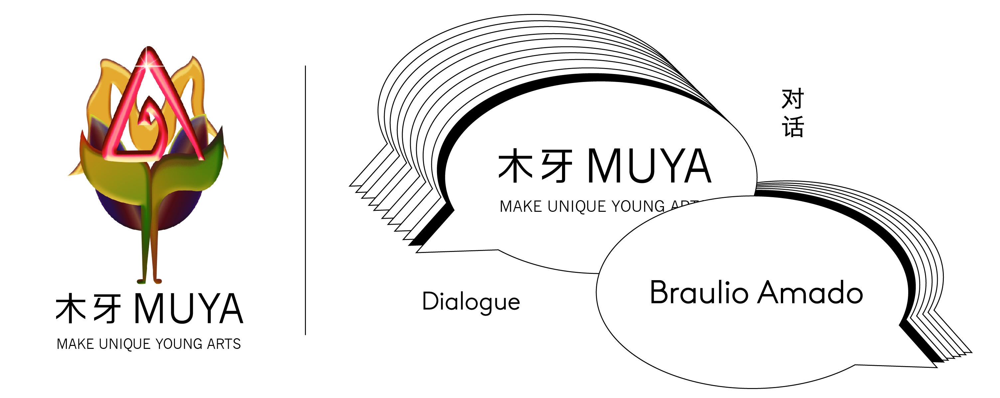欢迎来到木牙Make Unique Young Arts，让我们来探索互联网和平面设计的世界～
互联网顾名思义，万物网络互联。生活在20世纪-21世纪的我们，因为互联网的出现生活得到了巨大的改变也得到了许多的便利。现在的我们有着和以往完全不同的习惯。在遇到不同的事情时习惯的打开某度，在迷路时打开导航，在找吃的时候打开WX。购物呢则是打开某个大桃子。就连最基本的社交也开始分线下，线上。现在的我们的生活在一个便利的时代，也因为生活在这样的环境，人们追求着便利，快捷，无障碍。
The Internet, as its name implies, is the net of everything. We lived in the 20th and the 21st century, and our life changed because of the Internet. We got a lot of convenience. Now we have entirely different habits than before. When encountering difficulties, we will turn on Baidu, turn on the navigation when getting lost, turn on WX when searching for food, and turn on Taobao during shopping online. Even the most basic social interaction has changed into offline and online. We live in a convenient era because people pursue convenience, fast and barrier-free experience because of this living environment.
闭关在家不能外出的日子里，突然失去一部分的便利引起了许多人的不适。但所有的事情都需要便利吗？现实生活中的乐趣被虚拟现实所替代，随着3D投影，VR眼镜等技术的出现，现实生活中与自然接触的感官真实感受开始从人们的意识中脱离
The sudden loss of some of the conveniences that come with being shut up at home and unable to go out causes many people's discomfort. But does everything need to be convenient? The pleasure in real life is replaced by virtual reality. With the emergence of 3D projection, VR glasses, and other technologies, the sensory and natural feelings in real life begin to break away from people's consciousness.
Amado 作为新锐图像设计师兼插画师，他认为人们把现实生活和虚拟生活开始混淆在一起。他希望人们看待艺术的方式还是要保持复杂。我们今天有幸邀请到了 Bráulio Amado 来分享作为纽约热门设计师对于现在设计走向的理解和自己的一些小经验～
Amado, a graphic designer and illustrator, believes people are starting to confuse real life with virtual life. He wants the way people look at art to remain complicated. Today we are honored to have Braulio Amado share his understanding of the current design trend as a popular designer in New York and some of his own experiences.

BráulioAmado是来自葡萄牙的图形设计师和插图画家，目前居住在纽约市。他曾在纽约Pentagram担任设计师。然后加入Bloomberg 商业周刊担任艺术总监。移至Wieden + Kennedy。然后在2017年成立了自己的工作室 (BAD STUDIO)。自2018年以来，他在纽约市东村（East Village）共同经营SSHH，这是一个突变的艺术空间，教室和商店。
Bráulio Amado is a Graphic Designer and Illustrator from Portugal, currently living in New York City. He worked as a Designer at Pentagram NYC. Then joined Bloomberg Businessweek as an Art Director. Moved to Wieden+Kennedy. Then started his own studio in 2017. Since 2018 he co-runs SSHH, a mutant art space, classroom and store in the East Village of NYC.
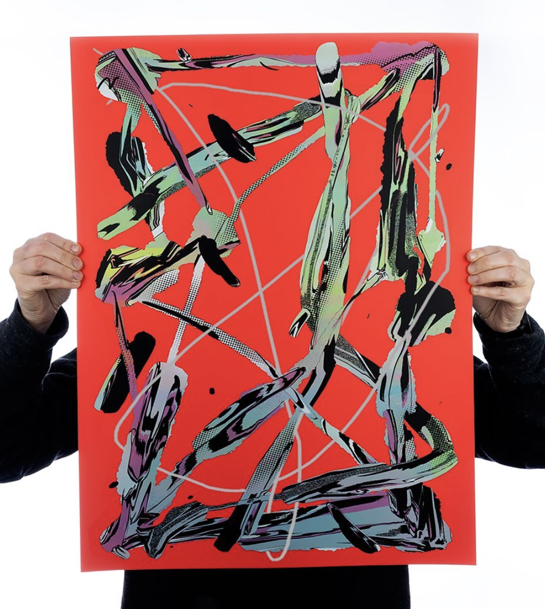
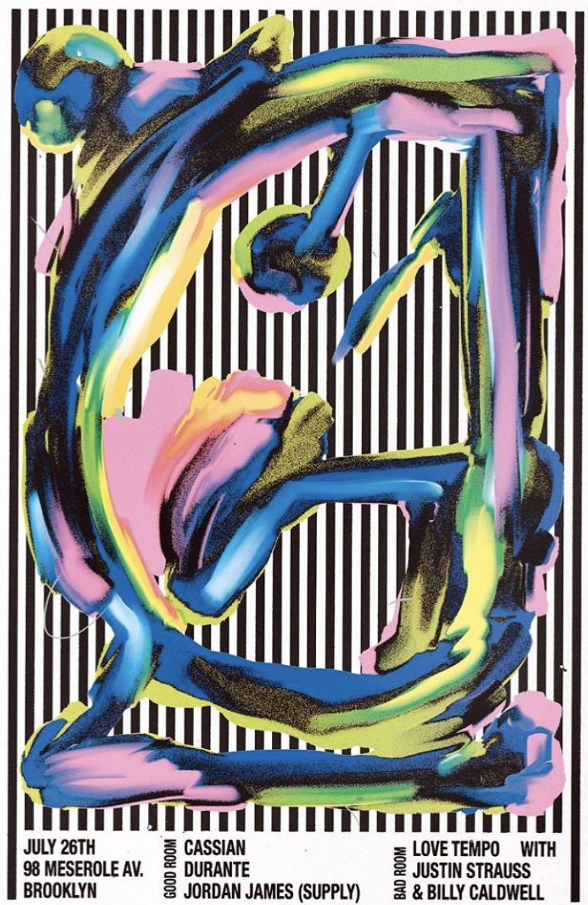

如今，我们已经习惯于通过互联网消费艺术品，点击链接是以一种轻松的方式浏览世界，而我想使人们看艺术的方式变得复杂。
We’re so used to consuming art through the Internet nowadays, Clicking links is supposed to be an easy way of navigating the world, so I wanted to make it very complicated in a space that people come to look at art.
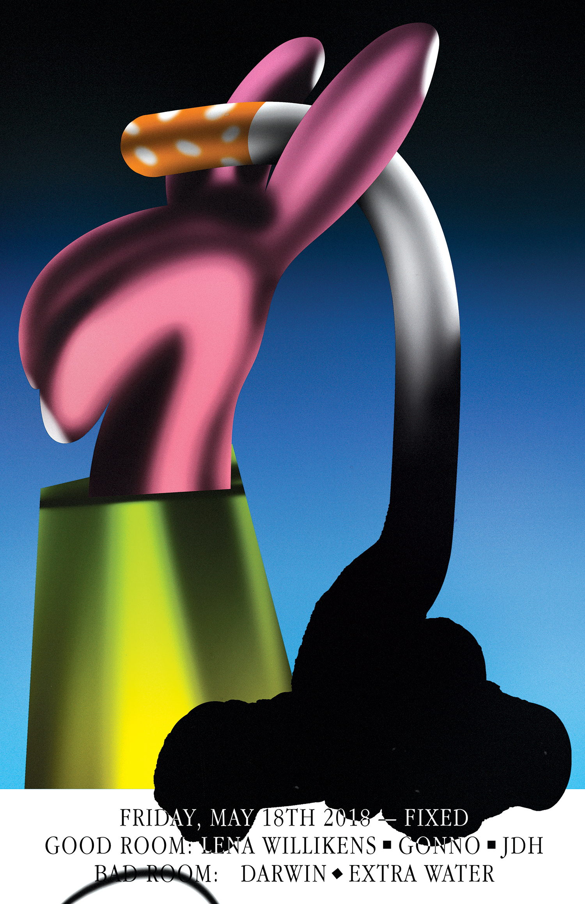

➤ 木牙MUYA: 作为目前最热门的平面设计师兼插画师之一，Braulio 是如何看待现在的平面视觉传达的流行趋势的？（目前出现的热门科技感设计以及色块渐变等流行元素）或者说是否会在自己的设计中也沿用一些流行元素？还是保持自我？
As one of the most popular graphic designers and illustrators, how does Braulio view the current trend of graphic visual communication? (Currently popular elements such as popular technological design and color block gradient) Or will you use some popular elements in your own design? still, keep yourself？
Bráulio Amado: 哈！我不认为我*那么*受欢迎，但要感谢你的夸奖！我认为目前尚无特定趋势，我认为这更多是几种样式和趋势的结合。我认为互联网使一切变得不堪重负，难以确定，这是一件好事。我花许多时间来通过网络浏览现实世界中的物品，所以无论如何（无论是否时髦），一切都会激发我的灵感，并且我会尝试将所有内容翻译成我自己的语言。
Ha! I dont think I'm *that* popular, but appreciate the compliment! I don't think there's a specific trend going on at the moment, I think it's more of a mix of several styles and trends. I think the internet made everything more overwhelming and hard to pin down, and I think that's a good thing. I definitely spend too much time online and looking at stuff in the real world, so everything ends up inspiring me no matter what — trendy or not, and I try to translate whatever that is into my own language.
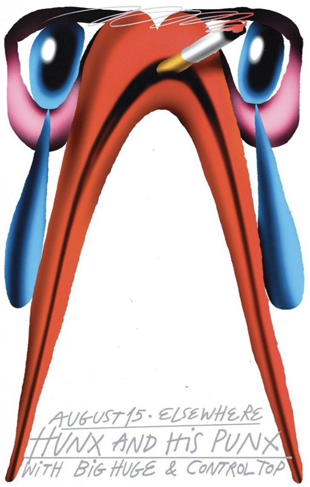
➤ 木牙MUYA: 2019 Linking park展览，虽然是在讲述互联网给我们带来与从前的生活不同的概念，但是在展览布置上却丝毫没有科技感。作品本身是手写网页地址在白色帆布上，墙上，就连最有科技感的呈现也只是出现了显示屏。对于这样呈现的展览和表达概念上的差距，Braulio 是如何解释和规划的？
Although the 2019 Linking park exhibition the concept is about the Internet has brought us different from the previous life, there is no sense of technology in the exhibition display. The work itself is a handwritten web page address on a white canvas on the floor, and black one on the wall, even the most technologically things is the monitor. How does Braulio explain and plan the gap between the exhibition and the concept of expression?
Bráulio Amado: 那是其中的乐趣。关于一种虚拟语言，但是没有任何东西可以在现实生活中真正地进行导航。实际的图像印在作品的背面，因此人们可以尝试在它们后面进行查看，但是大多数人会打开网络输入URL而不是尝试察看隐藏在URL后面的山峰。这是一个非常愚蠢的想法，我很高兴有人付钱给我让我在现实生活中体现这一点。
That was the fun part of it. To be about a virtual language but not having anything to actually navigate it in real life. The actual images were printed on the back of the pieces, so people could actually try and look behind them, but most people would type out the URL instead of trying to peak behind it. It was a very dumb and silly idea that I'm quite glad someone paid me to do it in real life.
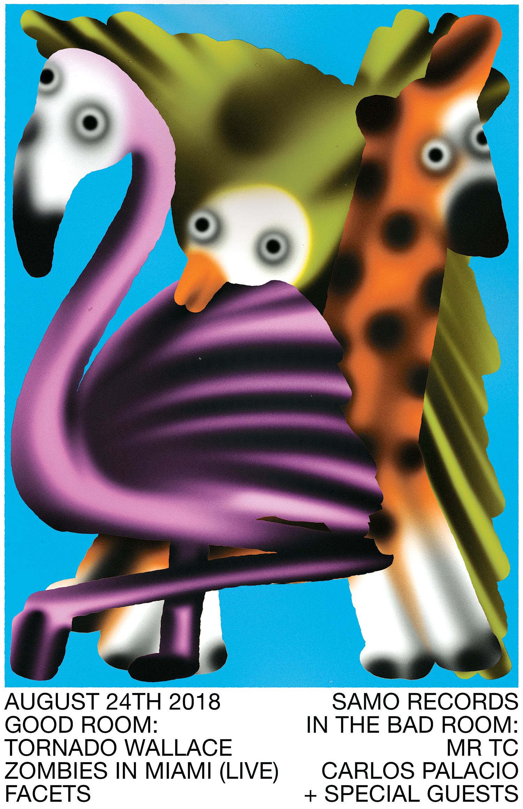
➤ 木牙MUYA: 在Linking park这一概念中你提到人们习惯使用网络购买艺术品。而作品中的手绘是为了让这个过程变得复杂化，需要我们实际手动输入URL（Http：//）才能看到实际页面。实际生活中人们不只是通过互联网购买艺术品，现在的我们通过互联网来消费情感等虚拟物品。如果以这个角度构思作品，你会如何表现？你又是如何理解现在的互联网消费？
In the concept of Linking park, you mentioned that people are used to using the Internet to buy art. The hand-writing in the work is to complicate this process, and we need to manually enter the URL (Http://) to see the actual page. In real life, people don't just buy art through the Internet, but now we consume virtual goods such as emotions through the Internet. If you conceive a work from this perspective, how would you perform? How do you understand the current Internet consumption now?
Bráulio Amado: 互联网改变了我们的生活，也改变了我们消费的方式。最近，我意识到我花了多少时间连接和看屏幕，并一直在尝试改变这一点-这并不容易。但是，我尽量避免从事围绕它进行过多旋转的项目，所以不确定！
The internet changed our lives and the way we consume things for sure. I recently realized how much time I spend connected and looking at screens and have been trying to change that — it hasnt been easy. But I try to avoid working on projects that revolve too much around it though, so not sure!
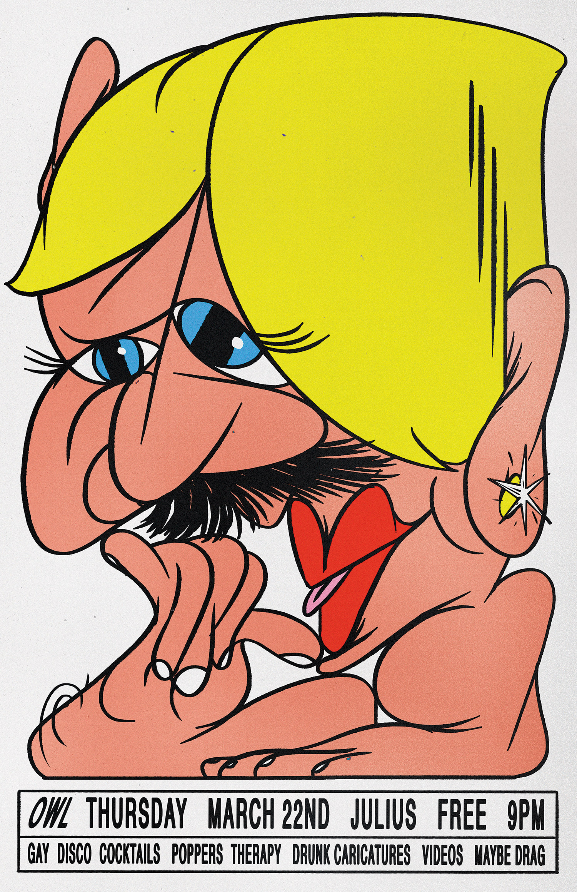
➤ 木牙MUYA: 您有曾经在Pentagram工作的经历，在Pentagram的设计工作是怎么样的呢？收获了怎样的经验？
You have had design experience at Pentagram before. What was your design work in Pentagram? How was that? What experience did you get?
Bráulio Amado: Pentagram是我大学毕业后的第一份工作。我从互联网开始，然后成为初级设计。我在卢克·海曼（Luke Hayman）的领导下工作，这虽然充满挑战，但也非常令人惊奇。我学到了很多。我的风格更具说明性和朋克风格，与卢克（Luke）的风格完全相反。但是，人们需要学习规则才能打破它们，因此Pentagram绝对是我学习所有规则的地方。
Pentagram was my first job out of college. I started as an internet and then became a junior designs. I worked under Luke Hayman and it was challenging but also quite amazing. I learned a lot. My style is more illustrative and punk, and that's the complete opposite of what Luke does. But, you need to learn the rules in order to break them, so Pentagram was definitely the place where I learned all the rules.
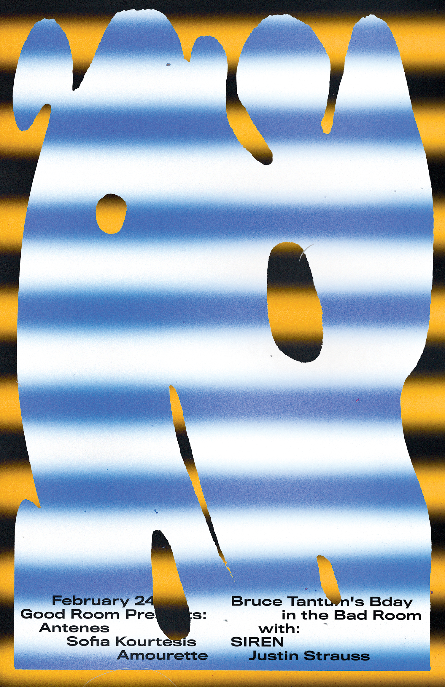
➤ 木牙MUYA: 即是插画师又是平面设计师的双重身份给你带来了哪些好处？开始一个idea时您更倾向开始于纸张还是手绘板？对于现在出现的电子绘画产品和跟随而来的各种app，你是怎么想的？纸张，画笔和这些方便快捷甚至智能的科技软件比较的话双方的优劣势在哪？
What are the benefits of being an illustrator and a graphic designer? When starting an idea, do you prefer to start with paper or hand-drawn boards? What do you think about the current electronic painting products and the various apps that follow? What are the advantages and disadvantages of paper & paintbrushes, and the convenient smart technology software?
Bráulio Amado: 我喜欢用画笔绘画，也喜欢用平板电脑和应用程序绘画。两者都给我不同的效果，这真的很棒。我总是对自己的工作感到无聊，所以我尝试在彼此之间进行调换，或者有时使用两者，将自己引导到新的地方。
I love painting with brushes and I love painting with tablets and apps. Both give you different results and that's fantastic. I'm always bored with what I do, so I try to swap between one and the other, or use both sometimes, in order to push myself somewhere new.
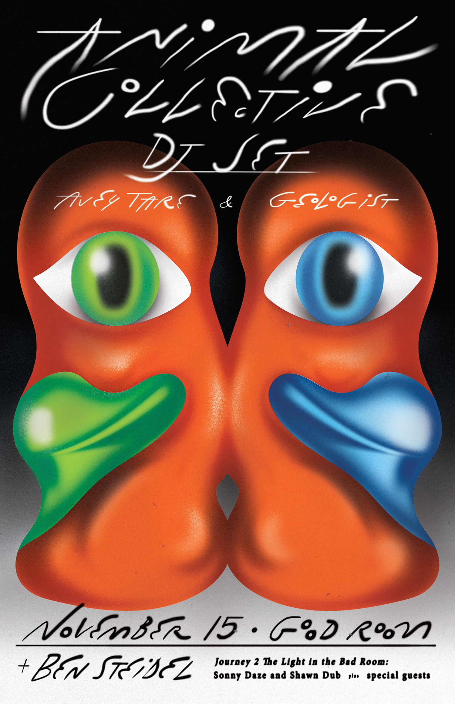
➤ 木牙MUYA: Braulio Amado 对于插画在不同媒介上展示又怎样不同的理解呢？例如，插画展示在衣服上，书籍里，甚至是以动态视频的方式呈现。
How do you understand your illustrations designed and presented on different media? For example, your illustrations are displayed on clothes, on publications, and even in the form of motions and videos.
Bráulio Amado: 很有趣！我喜欢探索除计算机屏幕以外的其他格式。当你可以握住或观察现实生活中的物体时，这是完全不同的体验。
It's fun! I love exploring different formats besides the computer screen. It's a whole different experience when you can hold or look at an object in real life.
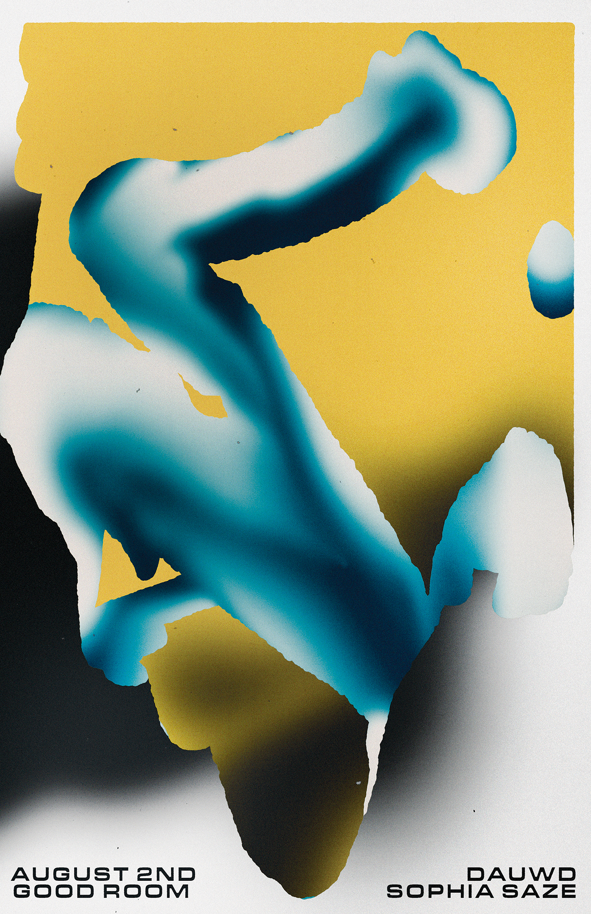
➤ 木牙MUYA: Braulio Amado 对于一个设计或者概念在布局和实际操作时，Braulio觉得概念需要占据作品的百分之多少的比例？还是说必须100%？如果不是100%，那概念是多少？剩下的那个部分又是什么？
For a design or concept in the layout and actual operation, what percentage of the work does Braulio feel that the concept needs to occupy? Or does it have to be 100%? If it is not 100%, how much is the concept? What is the remaining part?
Bráulio Amado: 取决于你正在做的工作。如果你尝试去交流信息，那么这是100％最重要的事情。如果你想传达一种感觉或某种更感性的东西，那么，好吧，如何将其转化为设计已经是概念思考的一部分。
Depends of the work you are doing. If you are trying to communicate information, then it's 100% the most important thing. If you are trying to communicate a feeling or something more emotional, then.. well, how you translate that into design is already part of a conceptual thinking.
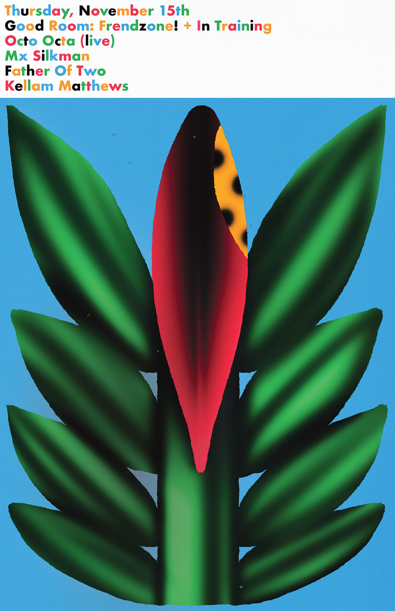

✯ Which inspire Bráulio Amado most ✯
“Dont be a jerk and have fun”
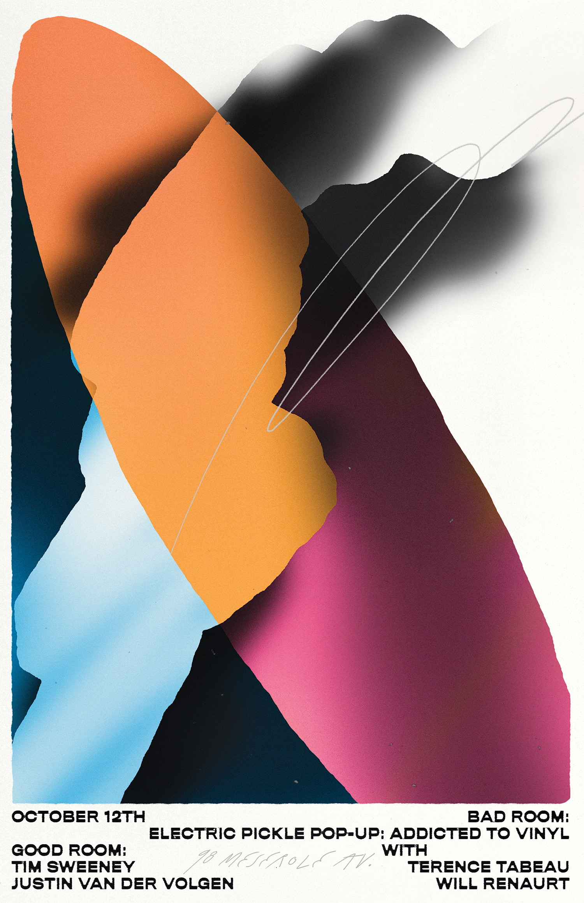
✤ BAD Studio网站（Bráulio Amado Website)
✤ Bráulio Amado邮箱（Contact Email)：AMADOBRAULIO@GMAIL.COM
✤ INS(instagram): braulioamado
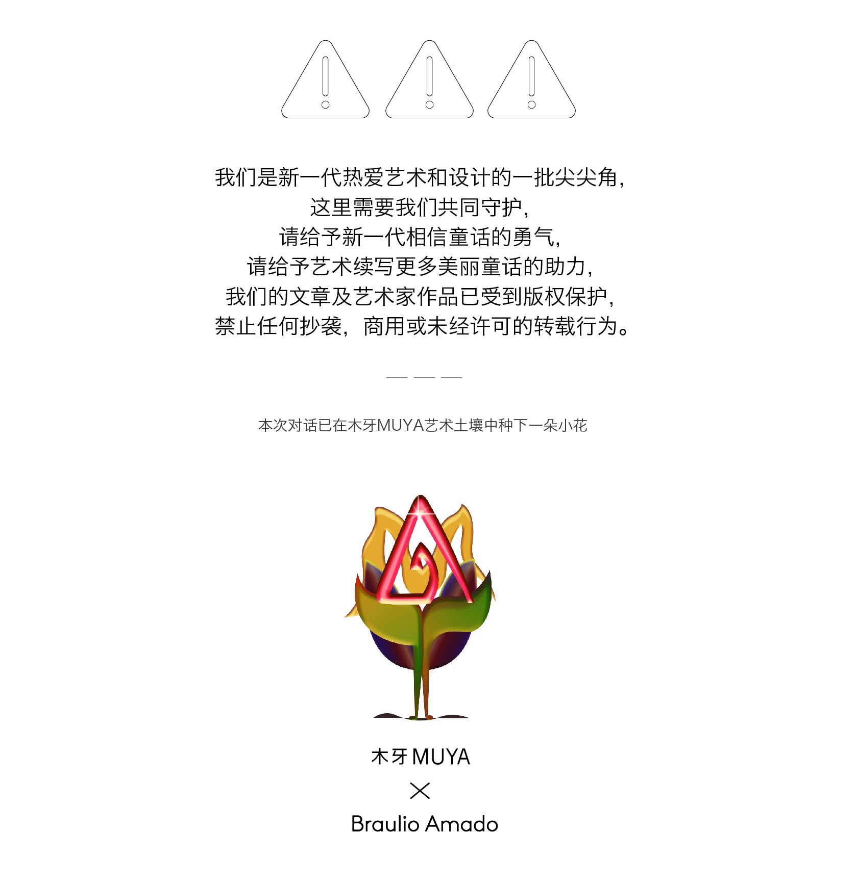
木牙微信订阅号